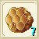
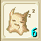

炸彈作成
注：日本では未実装です。
炸彈はアイテム扱いのため、行動順が早くなります。
| 画像 | 台湾名 | 個数 | 性能 | 材料 |
| 攻撃範囲 | 台湾名材料 | |||
| Rank1 | ||||
| 蕃茄炸彈 | ２ | ATK+10 | 麻4、トマト20 | |
| 単体 | 麻布4、蕃茄20 | |||
| 白米炸彈 | ４ | ＡＴＫ+18 | 麻8、銅8、神聖米20 | |
| 単体 | 麻布8、銅條8、神聖米20 | |||
| Rank2 | ||||
| 石彈 | ２ | ATK+25 石化効果 |
銅6、イエローメランチ20、木綿4、地クリ欠片2 | |
| 単体 | 銅條6、黄月木20、木棉布4、地的水晶碎片2 | |||
| 火焔彈 | ４ | ATK+32 | 銀2、モミ20、木綿8、火クリ欠片8 | |
| 単体 | 銀條2、樅20、木棉布8、火的水晶碎片8 | |||
| Rank3 | ||||
| 手榴彈 | ２ | ATK+71 睡眠効果 |
鉄8、銀6、モミ20、イエローメランチ20、フェルト4 | |
| 単体 | 鐵條8、銀條6、樅20、黄月木20、毛氈4 | |||
| 冷凍彈 | ４ | ATK+82 | 銀8、純銀4、ツガ16、フェルト8、水クリ欠片12 | |
| 単体 | 銀條8、純銀條4、鐵杉16、毛氈8、水的水晶碎片12 | |||
| Rank4 | ||||
| 輪刃 | ２ | ATK+96 | 銀8、純銀8、ツガ20、コットン4、風クリ欠片16 | |
| 単体 | 銀條8、純銀條8、鐵杉20、棉4、風的水晶碎片16 | |||
|  | 蜂巣 | ４ | ATK+108 | 純銀8、金8、アイリス20、コケモモ20、コットン8 |
| 単体 | 純銀條8、金條8、蝴蝶花20、桃木20、棉8 | |||
| Rank5 | ||||
| 黄色炸藥 | ４ | ATK+123 | 純銀10、金10、ツガ20、ヒバ20、綿端8 | |
| 範囲 | 純銀條10、金條10、鐵杉20、琵琶木20、細線8 | |||
| 迷魂彈 | ６ | ATK+135 混乱効果 |
純銀8、金7、白金7、赤松12、綿端20 | |
| 範囲 | 純銀條8、金條7、白金條7、赤松12、細線20 | |||
| Rank6 | ||||
| 臭彈 | ４ | ATK+150 毒効果 |
金7、白金8、赤松14、綿端14、青の９番1 | |
| 範囲 | 金條7、白金條8、赤松14、細線14、深藍九號1 | |||
| 狂風炸彈 | ６ | ATK+162 | ミスリル鋼12、ヒバ12、赤松20、風クリ欠片30 | |
| 範囲 | 幻之鋼條12、琵琶木12、赤松20、風的水晶碎片30 | |||
| Rank7 | ||||
| 催涙彈 | ４ | ATK+189 酩酊効果 |
ミ鋼16、赤松20、タイム20、ジェノーバスリード8、心眼1 | |
| 範囲 | 幻之鋼條16、赤松20、百里香20、莎蓮娜線8、神眼1 | |||
|  | 催眠彈 | ６ | ATK+177 睡眠効果 |
白金12、ミスリル鋼12、ヒバ20、赤松20、タイム20 |
| 範囲 | 白金條12、幻之鋼條12、琵琶木20、赤松20、百里香20 | |||
| Rank8 | ||||
| 星星彈 | ４ | ATK+240 | ミスリル鋼20、赤松20、ホオノキ20、スギ20、誓いの証1 | |
| 範囲 | 幻之鋼條20、赤松20、朴20、杉20、誓言之證1 | |||
| 毒氣彈 | ６ | ATK+207 毒効果 |
ミスリル銀18、ツガ10、ホオノキ20、アルパネスリード12、モスリザード1 | |
| 範囲 | 幻之銀條18、鐵杉10、朴20、阿巴尼斯製的布12、摩斯蜥蜴1 | |||
| Rank9 | ||||
| 碎紙彈 | １０ | ATK+234 忘却効果 |
ダマスクス鉱20、アップルミント20、クイニ20、フェンネル16、アルパネッサ7 | |
| 全体 | 達馬斯礦條20、蘋果薄荷20、香草20、茴香16、細麻布7 | |||
| 雪花彈 | ６ | ATK+288 | レグネシウム15、スギ20、永久氷石12、マイティナイト1、誓いの証1 | |
| 全体効果 | 勒格耐席姆條15、杉20、永久冰石12、鋼騎之礦1、誓言之證1 | |||
| Rank10 | ||||
| 銀彈 | １０ | ATK+266 混乱効果 |
レグネシウム15、セルハット鉱12、？？8、シングロール20、カシミア12 | |
| 全体 | 勒格耐席姆條15、謝爾哈特礦條12、喜馬拉斯礦條8、單木20、開米士毛線12 | |||
| 震撼彈 | ５ | ATK+360 | ？？10、トネリコ20、魔クリ2、マイティナイト3、誓いの証2 | |
| 全体 | 喜馬拉斯礦條10、袴？20、魔族水晶2、鋼騎之礦3、誓言之證2 | |||
＊「喜馬拉斯礦條」という鉱石がよく分からないのですが、R10でイーリス鉱山大坑道（118.125）にて銅交じりで取れるそうです。